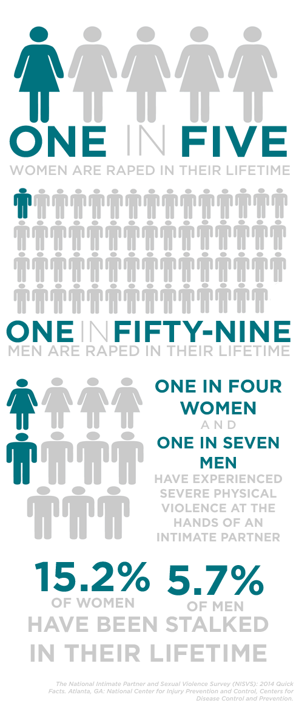

Mission
Uplift is dedicated to combating sexual abuse in online communities through education and advocacy. We work to ensure that these flourishing communities are safe for the millions of people who connect through them.
- We believe that the internet can be an incredible tool for good.
- We believe that everyone has the right to feel free from sexual harassment.
- We believe that everyone should have the freedom to use the Internet safely.
Uplift's History
In 2014, over seventy young women in the Youtube community came forward with accusations of sexual and emotional abuse against many creators. The accused Youtubers were people who had been deeply trusted, many with large audiences, and the communities that surrounded these Youtubers were reeling in the wake of these accusations. There was a clear need for resources, support, and education specifically tailored to communities fostered through the Internet. YouCoalition was designed to provide that service, bringing together members of the community with the common goal of creating a safe space for survivors, resources for everyone, and a way to decrease instances of online abuse. Within its first year, YouCoalition became Uplift, with the broader goal of helping all Internet communities. From creating an online educational video series to providing in-person resources and discussion at the conventions, Uplift expands upon the missions of traditional sexual violence, addressing the complexities that our virtual world add to instances of sexual and emotional abuse. Uplift is the first organization dedicated entirely to empowering online communities in addressing sexual violence. We believe that the communities in which this abuse takes place are also the key to eliminating this abuse, and we plan to stand by these communities every step of the way.
Projects: Engage by Uplift
Statistics
Definitions
Online communities
Vast virtual networks composed of millions of people who have met and formed relationships online. These communities tend to form around specific sites. Reddit, Tumblr, and Vine are three examples of popular sites with thriving, distinct cultures and hundreds of thousands of active community members. Video game communities are also popular, as guilds with hierarchical structures help organize players.
The YouTube Community
The vibrant virtual network of people who have connected due to a shared interest in YouTube and the videos posted there. With more than one billion users, YouTube has established itself as the third most visited website in the world. Some people who upload videos to the site (referred to as creators) have amassed huge followings, which can range from thirty thousand to five million people. These fans connect with other fans through social media sites, sharing stories and jokes about their favorite videos and creators. From these interactions, a personal connection can sprout and friendships can form. Hundreds of thousands of people have connected with each other in this way. Sometimes, these virtual connections translate to the physical world, as tens of thousands of fans participate in informal meet-ups and formal conventions.
Consent
A voluntary, continuous, informed mutual decision between people to do something. Consent is absolutely required for any sexual activity. If someone is too drunk or high to drive, then they’re unable to consent. Silence is not consent. “Do you want to…”, “Can I…”, and “Is this okay?” are all ways to ask for consent.
Emotional Abuse
Non-physical behaviors used to inflict psychological trauma on another person. This can include blackmail, stalking, starting rumors, harassment, calling names, and isolating someone from friends and family, as well as threatening to harm themselves or others.
Gaslighting
A form of emotional abuse where an abuser manipulates a victim into disbelieving themselves. The intent is to ensure that the abuser is always seen in a positive light.
Stalking
Unwanted obsessive attention directed towards someone. Stalking can include harassment, repeatedly sent messages, threats, and following.
Physical Abuse
Unwanted physical contact or the threat of unwanted physical contact. This includes but is not limited to pushing, pinching, or grabbing someone, throw row-eq-heighting things at someone, threatening someone with a weapon, and forcing someone into a sexual act. An action does not need to leave marks like scars or bruises to qualify as physical abuse.
Rape
Any attempted vaginal, oral, or anal penetration that has not been consented to. Any gender can experience this.
Sexual Abuse
Sexual activity that has not been consented to. This can occur in a physical or virtual context. Virtual sexual abuse occurs when a person is pressured into providing sexual content on an online platform (such as being repeatedly asked to provide nude photos via Skype). It can also occur when a person is sent sexual content without giving their consent first. See the above definitions for more information on physical sexual abuse.

Volunteer
Interested in volunteering? Email volunteer@uplifttogether.org
Donate
Uplift is a registered 501(c)3 nonprofit, meaning all donations are tax-deductible. Your gift will fund resources to survivors of sexual abuse, to educate people about the complexities of sexual violence online, and to create a community that supports survivors and victims in their recovery. You can see the direct results of your donations by visiting our campaigns page. We are extremely grateful for every donation, regardless of size.